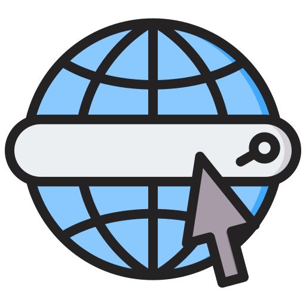
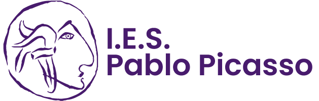

BCM Asesor
Portal web profesional y adaptativo diseñado a medida para consultoría integral de empresas. Enfoque optimizado en usabilidad (UX/UI) y conversión corporativa.
Técnica Superior DAM | Especialista Salesforce Y Creadora Digital
Desarrolladora Web y Multiplataforma apasionada por crear experiencias digitales únicas y funcionales. Especializada en desarrollo frontend y CMS (HTML5/CSS3, UX/UI, WordPress, Elementor) y backend/cloud (Java, Eclipse, SQL, Firebase, integración de APIs REST y Salesforce). Combino mi perfil técnico con habilidades creativas en redacción de guiones y creación de contenido estratégico.
El camino que he recorrido estos años entre formación, consultoría y desarrollo web.

Diseño, desarrollo y maquetación adaptativa (HTML5/CSS3, UX/UI) de sitios web en producción como BCM Asesor e Imporex. Optimización de velocidad, SEO On-Page y soporte digital.
Gestión y depuración de bases de datos administrativas de alto volumen. Tratamiento de documentación confidencial bajo normativa RGPD y soporte informático institucional.

Desarrollo en entorno Cloud para la cuenta multinacional Repsol. Parametrización de bots de mensajería automatizada en WhatsApp, Salesforce Flow y trabajo ágil con Scrum y Git.

Especialización en desarrollo multiplataforma (Java, Flutter/Dart), bases de datos SQL y NoSQL, APIs REST y maquetación web adaptativa.
Sitios web reales desarrollados y maquetados a medida en producción.
Portal web profesional y adaptativo diseñado a medida para consultoría integral de empresas. Enfoque optimizado en usabilidad (UX/UI) y conversión corporativa.
Plataforma web comercial para empresa de importación y exportación internacional, estructurada para una navegación ágil y rendimiento SEO.
Plataforma de servicios de maquetación y gestión digital. Diseño moderno, optimización de velocidad de carga e interfaz intuitiva para el usuario.